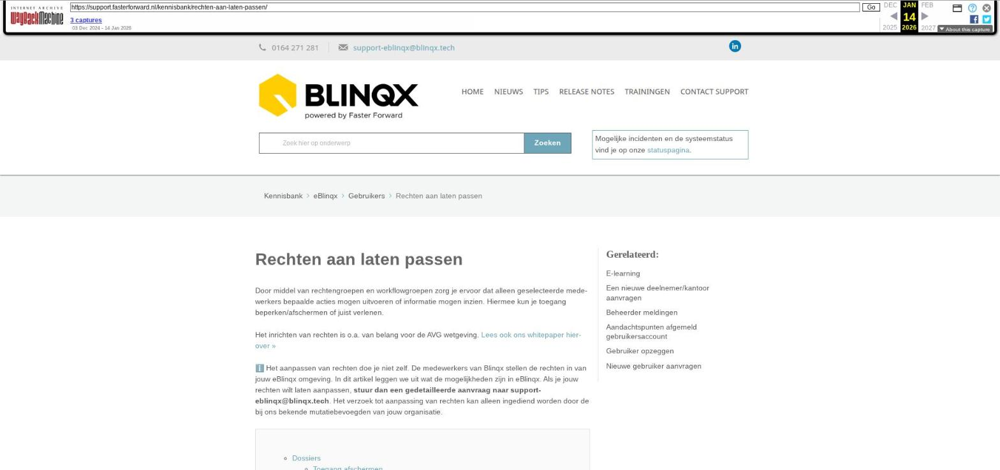

Rechten aan laten passen

Tekstinhoud
Rechten aan laten passen
Door middel van rechtengroepen en workflowgroepen zorg je ervoor dat alleen geselecteerde medewerkers bepaalde acties mogen uitvoeren of informatie mogen inzien. Hiermee kun je toegang beperken/afschermen of juist verlenen.
Het inrichten van rechten is o.a. van belang voor de AVG wetgeving. Lees ook ons whitepaper hierover »
Het aanpassen van rechten doe je niet zelf. De medewerkers van Blinqx stellen de rechten in van jouw eBlinqx omgeving. In dit artikel leggen we uit wat de mogelijkheden zijn in eBlinqx. Als je jouw rechten wilt laten aanpassen, stuur dan een gedetailleerde aanvraag naar support-eblinqx@blinqx.tech. Het verzoek tot aanpassing van rechten kan alleen ingediend worden door de bij ons bekende mutatiebevoegden van jouw organisatie.
Dossiers
Toegang afschermen
Aanmaken
Verwijderen
Type dossier bekijken
Workflows
Workflows toevoegen of verwijderen
Workflows wijzigen
Producten
Producten aanmaken
Producten verwijderen
Documenten
Personen
Personen toevoegen en/of verwijderen
E-mailadressen beheren
Handtekening aanpassen
Standaardteksten beheren
Managementinformatie
Boekhouding en facturatie
Dossiers
Toegang afschermen
Als je alleen geselecteerde personen toegang wilt geven tot een dossier, koppel dan bevoegde workflowgroepen aan dit dossier. Indien er geen workflowgroep is gekoppeld aan het dossier kan iedereen het klantdossier inzien.
Als je een workflowgroep wilt laten aanmaken, vraag dit dan aan bij support-eblinqx@blinqx.tech.
Aanmaken
Als alleen bepaalde personen dossiers mogen aanmaken, dan kunnen we dit inrichten. Als je dossiers mag aanmaken, zie je op je dashboard de knop 'Dossier aanmaken'.
Verwijderen
Als alleen geselecteerde personen dossiers mogen verwijderen, dan is dit in te richten.
Type dossier bekijken
Achter alle typen dossiers (klant-, leveranciers-, personeels-, deelnemersdossiers) zitten aparte rechten. Zo kan je bepalen welke personen welke typen dossiers mogen inzien. Die gebruikers krijgen dan de rechten tot deze type dossiers.
Workflows
Workflows toevoegen of verwijderen
Het is niet voor iedereen mogelijk om workflows toe te voegen of te verwijderen onder een product in het dossier.
Als je hier toegang tot hebt, zie je in een dossier het tabblad 'Workflow'. Als je het recht hebt om te verwijderen is het kruisje achter de workflow rood (anders grijs). Als je het recht om workflows toe te voegen is het plusicoon bovenin blauw (anders grijs).
Workflows wijzigen
Het wijzigen of ontwikkelen van nieuwe workflows is zeer ingewikkeld en wordt daarom uitgevoerd door de workflowspecialisten van eBlinqx.
Producten
Bij 'Onderhoud administraties' > 'Rechten producten' geef je aan welke rechtengroepen toegang hebben tot de producten van een administratie. Dit wordt bij de meeste organisaties ingericht door een medewerker van Blin.
Producten aanmaken
Als je niet wilt dat iedere medewerker producten kan aanmaken in het dossier, kun je dit voor hem/haar onmogelijk maken. De knop 'Nieuw product' is dan niet zichtbaar in het klantdossier.
Lees hier meer over het aanmaken van dienst of inkomensverzekering, hypotheek, schadeverzekering en levensverzekering in een dossier.
Ook kan je instellen wie via Productbeheer op omgevingsniveau nieuwe producten kan aanmaken. Om nieuwe producten aan te kunnen maken moet de betreffende organisatie aanwezig zijn. Middels de rechten kan je bepalen wie nieuwe organisaties aan mag maken en beheren.
Producten verwijderen
Als bepaalde personen geen producten mogen verwijderen, kunnen we dit voor je instellen. Het rode kruisje aan de rechterkant van een product is dan niet klikbaar (grijs).
Documenten
Als je recht hebt om bepaalde producten in te zien, dan mag je ook de bijbehorende rechten bekijken. Als je bijvoorbeeld geen schadeverzekeringen om in te zien, kan je ook niet de gekoppelde documenten van schadeverzekeringen bekijken.
Personen
Het is mogelijk om te voorkomen dat bepaalde medewerkers geen personen kunnen toevoegen of verwijderen in dossiers. Dit zie je in het tabblad 'Partijen & objecten' in een klantdossier.
Personen toevoegen en/of verwijderen
Als je geen personen mag verwijderen in een dossier dan is het kruisje achter de persoon grijs en niet-klikbaar.
Als je geen personen mag toevoegen, zie je icoon rechtsboven bij de personen.
Hetzelfde geldt voor het kunnen aanpassen, toevoegen en/of verwijderen van e-mailadressen, adressen en telefoonnummers in een dossier.
E-mailadressen beheren
Om de inrichting van e-mailadressen (e-mailboxen) te beheren, heb je rechten nodig tot de beheermodules 'E-mailmanager' en 'E-mailgroepen'. Als je dit niet hebt, stuur dan een e-mail naar support-eblinqx@blinqx.tech.
Handtekening aanpassen
Als je niet wilt dat medewerkers hun eigen handtekening kunnen aanpassen, kunnen we dit instellen. Alleen beheerders van jouw organisatie passen dan de handtekeningen aan.
Standaardteksten beheren
In eBlinqx kan je gebruik maken van standaardteksten, bijvoorbeeld bij het opstellen van een e-mail. Deze standaardteksten kan je, indien je de rechten hiervoor hebt, zelf aanmaken en beheren.
Managementinformatie
In de module 'Managementinformatie' en tegels op het dashboard zijn grafieken met resultaten beschikbaar. Deze zijn alleen inzichtelijk voor gebruikers die rechten hebben om de 'Winst & verlies' module te bekijken.
Boekhouding en facturatie
Als alleen bepaalde personen de boekhouding en facturatie mogen inzien, stellen we dit voor je in.
Als je hier toegang tot hebt, zie je het tabblad 'Financieel' in je menu rechtsboven.
Laatste update: 15 oktober 2025
Was deze informatie nuttig?
Ja Nee